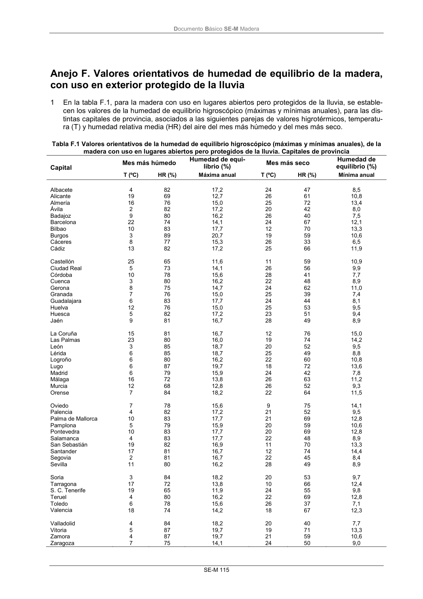

DB-SE-M · Fragmento de PDF p121 · versión 2019-12-20 · capa oficial
Formatos: JSON compacto · Markdown · PDF fuente
Ámbito del documento · texto del ámbito · documento y tablas
ID técnico a0212 · PDF pág. 121-123 · jerarquía no validada por persona · no es capítulo: sin_linea_de_encabezado · padre: raíz · literal original en el contenido: «Humedad de equilibrio (%)»
Humedad de equilibrio (%) equilibrio (%) T (ºC) HR (%) Máxima anual T (ºC) HR (%) Mínima anual Albacete 4 82 17,2 24 47 8,5 Alicante 19 69 12,7 26 61 10,8 Almería 16 76 15,0 25 72 13,4 Ávila 2 82 17,2 20 42 8,0 Badajoz 9 80 16,2 26 40 7,5 Barcelona 22 74 14,1 24 67 12,1 Bilbao 10 83 17,7 12 70 13,3 Burgos 3 89 20,7 19 59 10,6 Cáceres 8 77 15,3 26 33 6,5 Cádiz 13 82 17,2 25 66 11,9 Castellón 25 65 11,6 11 59 10,9 Ciudad Real 5 73 14,1 26 56 9,9 Córdoba 10 78 15,6 28 41 7,7 Cuenca 3 80 16,2 22 48 8,9 Gerona 8 75 14,7 24 62 11,0 Granada 7 76 15,0 25 39 7,4 Guadalajara 6 83 17,7 24 44 8,1 Huelva 12 76 15,0 25 53 9,5 Huesca 5 82 17,2 23 51 9,4 Jaén 9 81 16,7 28 49 8,9 La Coruña 15 81 16,7 12 76 15,0 Las Palmas 23 80 16,0 19 74 14,2 León 3 85 18,7 20 52 9,5 Lérida 6 85 18,7 25 49 8,8 Logroño 6 80 16,2 22 60 10,8 Lugo 6 87 19,7 18 72 13,6 Madrid 6 79 15,9 24 42 7,8 Málaga 16 72 13,8 26 63 11,2 Murcia 12 68 12,8 26 52 9,3 Orense 7 84 18,2 22 64 11,5 Oviedo 7 78 15,6 9 75 14,1 Palencia 4 82 17,2 21 52 9,5 Palma de Mallorca 10 83 17,7 21 69 12,8 Pamplona 5 79 15,9 20 59 10,6 Pontevedra 10 83 17,7 20 69 12,8 Salamanca 4 83 17,7 22 48 8,9 San Sebastián 19 82 16,9 11 70 13,3 Santander 17 81 16,7 12 74 14,4 Segovia 2 81 16,7 22 45 8,4 Sevilla 11 80 16,2 28 49 8,9 Soria 3 84 18,2 20 53 9,7 Tarragona 17 72 13,8 10 66 12,4 S. C. Tenerife 19 65 11,9 24 55 9,8 Teruel 4 80 16,2 22 69 12,8 Toledo 6 78 15,6 26 37 7,1 Valencia 18 74 14,2 18 67 12,3 Valladolid 4 84 18,2 20 40 7,7 Vitoria 5 87 19,7 19 71 13,3 Zamora 4 87 19,7 21 59 10,6 Zaragoza 7 75 14,1 24 50 9,0 DocumentoBásico SE-M Madera SE-M 117

PDF fuente redistribuible: copia fiel enlazada en esta página (SHA256 verificado).